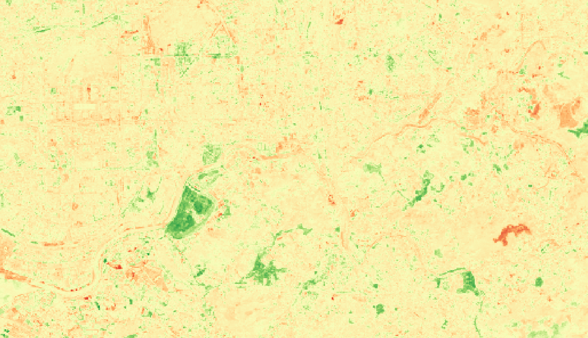

What is an orthomosaic?
An orthomosaic is a single composite image built from multiple individual images that have each been orthorectified, meaning corrected for terrain relief, sensor angle, and lens distortion to ensure a consistent scale. This allows for more accurate spatial measurements directly from the image, unlike a standard photograph. For this project, the orthomosaic covers a roughly 14km by 9km area along the Shenzhen River, capturing both the urban core of Shenzhen and the protected greenbelt on the Hong Kong side of the border.
How do you make a cloudless composite orthomosaic from open data?
A cloudless composite is made by filtering satellite images to a specific range, removing any frames above a set cloud cover threshold. This uses metadata carried by each image, followed by a pixel-wise statistical reducer applied across the remaining images. Since cloud cover varies between locations, the median value at each pixel reflects the actual ground condition at that point rather than a temporary cloud.
What is multispectral satellite imagery, and why does it matter?
Regular cameras capture only three bands of light, red, green, and blue, while multispectral sensors capture far more. Sentinel-2 captures 13 spectral bands, each tuned to a different part of the spectrum, including wavelengths invisible to the human eye such as near-infrared and shortwave infrared. Different surface materials reflect light differently across the spectrum, producing spectral signatures that are hard to see in standard color imagery, which allows for quantitative analysis of vegetation health, water quality, land cover, and more.
Multispectral data is especially relevant to sustainable development because it is freely available, global in coverage, and collected on a repeated schedule. This allows a wide range of environmental indicators to be monitored without additional cost or infrastructure, supporting targets such as tracking land degradation or forest cover change even in places without the resources to measure these goals otherwise. The comparison between Shenzhen and Hong Kong works as a small scale example of this, since the same river and similar latitude produced very different vegetation outcomes depending on the land use policy on either side of the border.
What is NDVI and how does it work?
NDVI, the normalized difference vegetation index, is the most widely used vegetation index. It is calculated as (NIR - Red) divided by (NIR + Red). Output values range from -1 to 1, with values closer to 1 indicating dense, healthy vegetation and values closer to 0 indicating bare soil or built up surfaces. Negative values typically indicate water, snow, or cloud cover.
Healthy vegetation reflects near-infrared light strongly while still absorbing most red light, so the NIR to red ratio increases alongside vegetation density and health. Dividing by the sum of the two bands accounts for variation in lighting and atmospheric conditions between scenes, allowing values to be compared consistently across different time periods or images.
Why does time of year matter for this comparison?
Vegetation changes seasonally, so comparing images from different seasons could produce a false signal of vegetation gain or loss. Ideally, both time periods should come from the same season to isolate genuine change. For this project, Time 1 covered December 2017 to February 2018, while Time 2 covered July to December 2025, a wider window spanning summer into winter. Since these ranges are not perfectly season matched, some of the observed difference could be tied to seasonal variation rather than location. This likely made less of a difference for the Hong Kong-Shenzhen comparison specifically, but is still worth noting when interpreting the results.